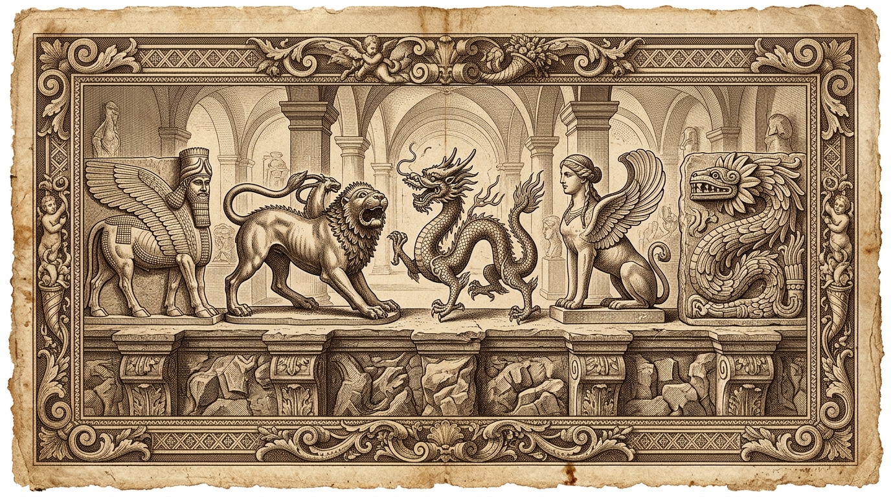

Archaeological & Art-Historical Compendium · c. 38,000 BCE – 1900 CE
Every Monster Humanity Carved, Cast, Painted & Illuminated
Gathered across nine civilizational wings—from Aurignacian mammoth ivory, Babylonian glazed brick, and Shang ritual bronzes to medieval bestiaries, Mesoamerican turquoise mosaics, and Edo woodblocks. Strictly authentic, human-made historical works held in the world’s museums and libraries.
—
Cataloged Plates
—
Distinct Beasts
—
Civilizations
40,000 yrs
Chronological Span

/
38,000 BCE – 1905 CE
Preparing catalog…